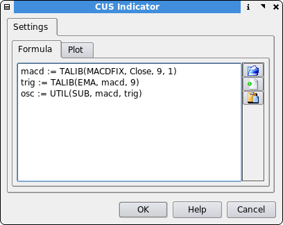
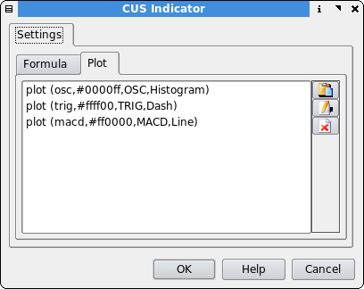

Custom - CUS
Description
Qtstalker provides some ready-made indicators, especially via TA-Lib. However, most of its power lies with Custom scripts CUS which enables application of any formulae. Build your own indicators.
CUS allows the user to create special indicators to plot according to his own wishes and is the basis for scanner and backtester. The user builds an indicator in a step by step manner, by using all the indicator plugins available. We are able to build most any kind of indicator quickly and simply. These CUS rules are similar to a script and can also include other CUS rules. Complicated, intensive indicators would best be left to creating a plugin instead of long series of functions, for speed and memory and versatility considerations.
See the contributed "CUS Examples Repository".
Formula Page

Buttons on the right
| Bring up a dialog to open an existing indicator rule, a use as blueprint | |
| Opens a dialog to select an existing CUS to be used as INCLUDECUS() | |
| Opens the function dialog to select any kind of indicator available |
This is where we enter our script. We break our script down into steps. Each step basically defines a variable. Each variable represents the results of an indicator command.
This will create a text file at ~/.qtstalker/dataN/indicator/Indicators/ which can be further edited, either via the interface or by hand. For manual changes, reload the chart to see the effect. New indicators created manually require progam re-start.
Rule Syntax
<variable> := <indicator>(indicator parameters)
| <variable> | The variable name. It cannot contain a reserved word. |
| := | This separates the variable name from the parameters and lets the parser know we are defining a variable |
| <indicator>(indicator parameters) | This defines what indicator and its parameters to use. Consult the indicator reference for the format of each indicator. |
Example
Here is an example of what the MACD indicator would look like if we constructed one manually instead of using the builtin version.
macd := TALIB(MACDFIX, Close, 9, 1)
trig := TALIB(EMA, macd, 9)
osc := UTIL(SUB, macd, trig)
Lets review what we did.
The first line creates a variable called macd. We use the TALIB indicator to get a MACD using the MACDFIX function.
The next line we create a variable called trig. This will be the trigger of the MACD, which is just an EMA of the MACD. So we use the TALIB plugin again and request an 9 period EMA of the 'macd'. Notice we use the variable macd as the input for the trig.
The last line we create a variable called osc. This is an oscillator. An oscillator is simply the difference between 2 variables. So we need to use the UTIL plugin that contains a subtraction (SUB) function. We input the parameters to get an oscillator of (macd - trig).
That's it.
Fortunately, we do not have to input all the parameters manually. We can use the function dialog GUI to construct the script for us.
For a description of available indicators see the Indicator Reference.
Plot Page

Buttons on the right
| Bring up a dialog box to insert a variable from the formula tab | |
| Opens a dialog change the plot properties of the selected variable | |
| Delete the selected variable from the plot list |
On this page we decide which variables from the formula page we choose to plot on our chart. Each plot command has 4 parameters.
Plot Syntax
plot (<var>, <color>, <title>, <plot type>)
| <var> | The variable name used in the formula page |
| <color> | The color the plot should use |
| <title> | The text label the plot will use |
| <plot type> | The plot type to use. i.e. Line, Histogram etc |
From our MACD example it looks like this:
plot(osc, blue, OSC, Histogram)
plot(macd, red, MACD, Line)
plot(trig, yellow, TRIG, Dash)
Notice we plot the osc variable first. We do this so the histogram does not obscure the macd and trig plots. Fortunately, the user does not need to input the plot format manually. We can use the 'insert' dialog to construct the plot parameters for us correctly.
CUS Language Statements
Remarks
Lines beginning with two slash // will be ignored by the CUS Interpreter.
Include other CUS rules
INCLUDECUS(ruleName)
This allows the user to include other CUS rules. This is helpful when making changes to one indicator/rule, changes will be propagated to all scripts that use the included indicator. Not thoroughly tested yet. Careful how you combine different indicators. Any duplicate variable names will abort the calculation. Mixing indicators that have different scaling properties will result in awful looking charts.
See the cdl-rel-ma example.
CUS Examples Repository
See the directories "misc/CUS_examples/" and "misc/CUS_examples/Contributions/" and copy some into your "~/.qtstalker/dataN/indicator/Indicators" directory. See the documentation and how to contribute.
Reserved Words
These words and symbols are reserved for use in CUS scripts. Do not use these words and symbols in or part of variable names or the script will fail or become unstable.
:=, plot, Date, Open, High, Low, Close, Volume, Open Interest, Day, Week, Month, DayOfWeek